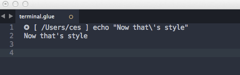
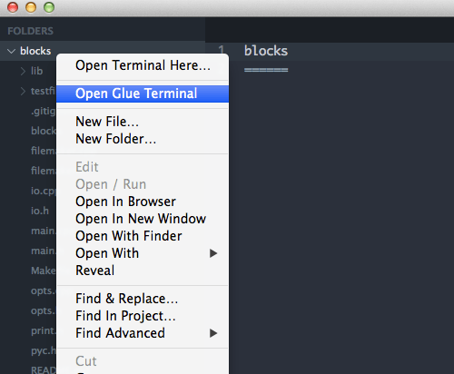
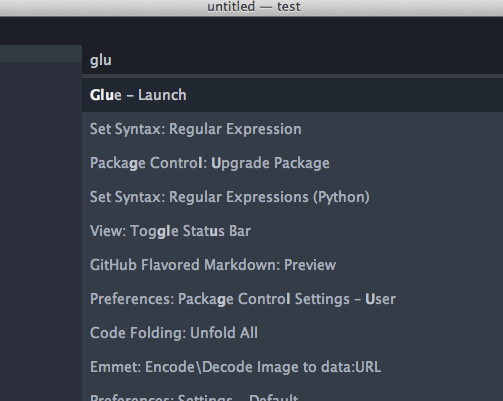
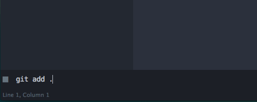

If you use the Sublime Package Control system, you can install Glue with the Sublime Text Command Palette. Open it with:
Mac OSX
Cmd - Shift - P
Linux/Windows
Ctrl - Shift - P
Type ‘install’, select the menu item, Package Control: Install Package, then type ‘glue’. The selection for the Glue plugin will appear. Select it and the install is performed automatically.
Open your Packages directory with the Sublime Text menu items Preferences -> Browse Packages. Then git clone the Glue repository as a new directory named ‘Glue’ in your Packages directory with the following command:
█ git clone https://github.com/chrissimpkins/glue.git "Glue"
If you like to do things the good ole’ fashion way, download the source repository from GitHub (tar.gz | zip).
Decompress the source repository and rename it “Glue”.
Open your Sublime Text Packages directory using the Preferences -> Browse Packages menu items.
Move the entire Glue directory into your Sublime Text Packages directory.
Open the Glue user settings file by using the Sublime Text menus to navigate to Preferences > Glue > Glue Settings - User. Include the following line in your JSON settings:
{
"glue_userpath" : "<YOUR PATH>",
[...]
}
Include your shell PATH settings as a colon (Unix/Linux) or semicolon (Windows) delimited string. You can use the default settings as a reference:
{
"glue_userpath" : "/usr/local/bin:/usr/bin:/bin:/usr/sbin:/sbin",
[...]
}
To find your own PATH variable settings, Linux/Unix (including Mac OSX) users can enter the command echo $PATH in your terminal emulator. Windows users can enter the command ECHO %PATH% in cmd.exe. Windows users should escape the forward slash characters in the PATH like this:
{
"glue_userpath": "WINDOWS"
}
Glue respects your assignment of directory priority in the standard left to right sequence as it attempts to locate system executables for the commands that you submit. If you find that a different version of an executable is being launched, or that installed applications are not being located, please confirm your PATH string in the Glue settings.
Note
Use the Glue Settings - User settings file rather than the default file. The default settings are reset with Glue updates!
Give your prompt a little style. Change the default by adding the glue_ps1 setting to the Glue Settings - User file (see instructions above). Here’s an example that shows how to change it to a ✪
{
"glue_ps1" : "✪",
[...]
}
And here’s what you get:
You can open Glue with any of these approaches:
Use the right click menu in your project sidebar
Use the Command Palette
Keybinding
Ctrl - Alt - G
Then begin entering your commands in the command line at the bottom of the editor.
Use the same syntax that you use on the command line in your terminal (with special character escapes or quotes!).